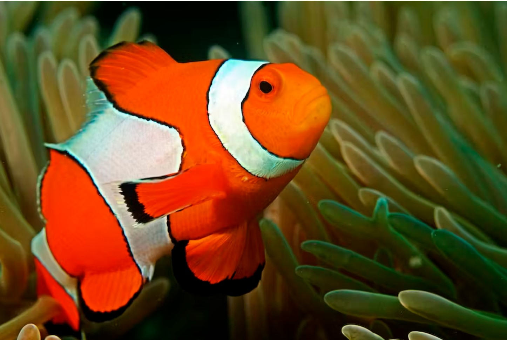

Clown Fish

A layer of mucus on the clownfish's skin makes it immune
to the fish-eating anemone's sting.
scientific name: Amphiprioninae
average lenght: 11 centimeters
average lifespan: 7 years
habitat: Tropical coral reefs
Bright orange with three distinctive white bars, clown anemonefish
are among the most recognizable of all reef-dwellers.
They reach about 11 centimeters in lenghth, and are named for the
multicolored sea anemone in which they make their homes.